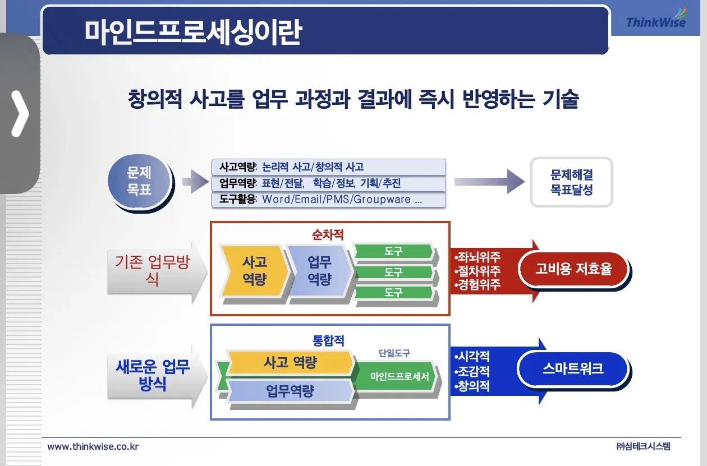
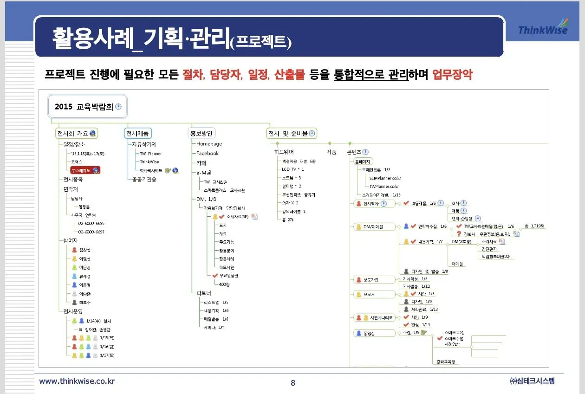
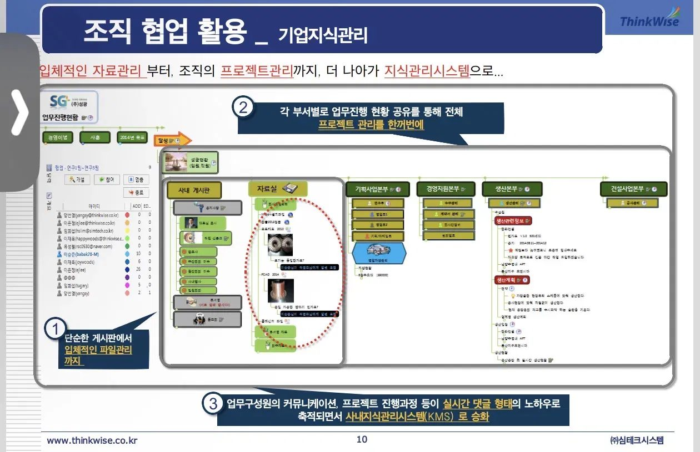
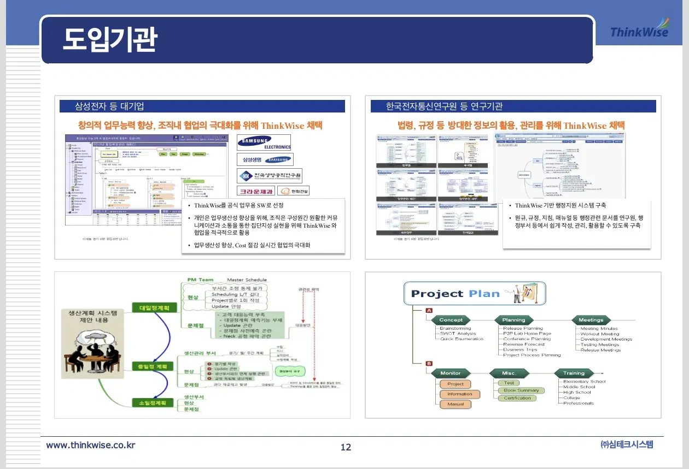
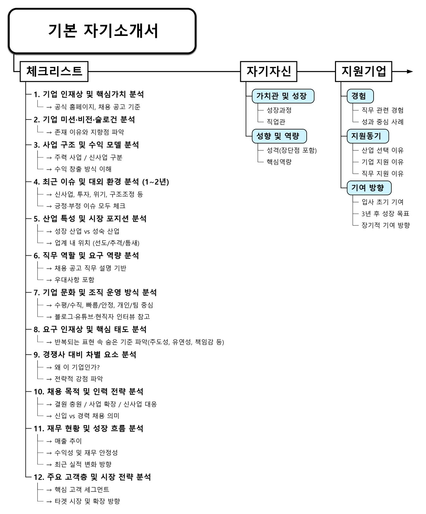
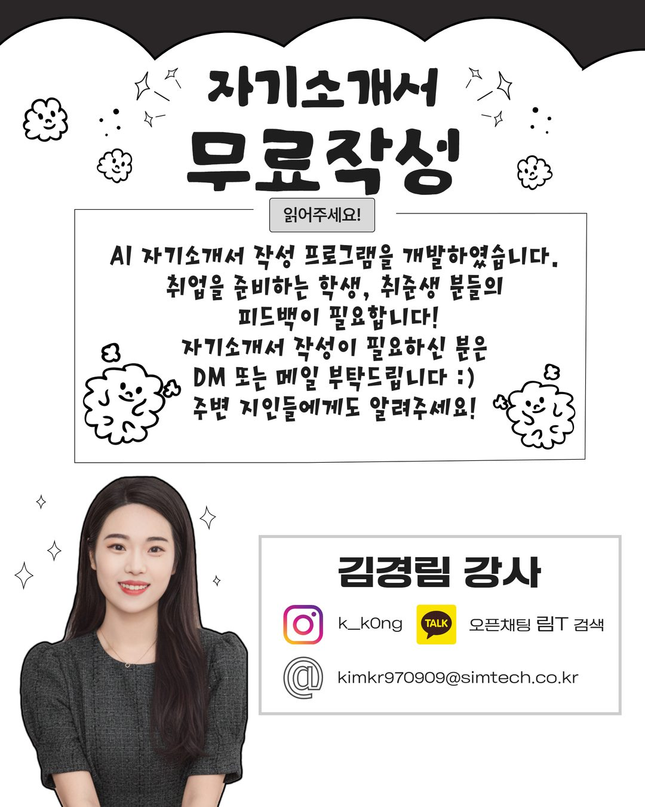

ThinkWise SaaS.
"기능이 아닌 '활용 흐름'을 가르치는 SaaS 교육 설계"

"기능이 아닌 '활용 흐름'을 가르치는 SaaS 교육 설계"
ThinkWise 사용자들이 기능 설명은 이해하지만, 강의가 끝나고 나면 실무 흐름에서 마인드맵을 다시 꺼내 쓰지 않는 문제가 반복되었습니다. "잘 배웠다"는 후기는 많은데, 정작 '현업 도구'로 자리 잡지 못하는 상태였습니다.
기능 나열식 매뉴얼을 폐기하고, "결과물을 만들기 위한 순서"로 교육 구조를 다시 짰습니다. 강사가 설명하고 → 시연하고 → 수강생이 따라하고 → 자신의 결과물을 만드는 실습형 흐름입니다.
동일한 커리큘럼을 그대로 반복하지 않았습니다. 사용자의 목적과 익숙함에 따라 커리큘럼을 세 층으로 나누어 운영했습니다.
강의 자체보다 더 중요한 산출물은, 같은 커리큘럼이 조직에 남아 반복 사용된다는 것이었습니다. 후속 프로젝트로도 확장됐습니다.






2024.06 – 2025.03 사이 정기 입문교육 수강생 후기 중 일부입니다. 익명 처리했습니다.
"좋은 기능 설명"과 "사용자가 실제로 결과물을 만들 수 있는 흐름"은 완전히 다르다는 것을 배웠습니다.
이후 모든 교육을 '결과물 기반 흐름 중심'으로 재설계하는 기준이 되었습니다. 자기소개서 마인드맵 커리큘럼, AI 자기소개서 프로그램, 그리고 AI EduMentor 정부과제까지 — 지금까지 이어진 모든 후속 프로젝트의 기획 원점이 여기에 있습니다.